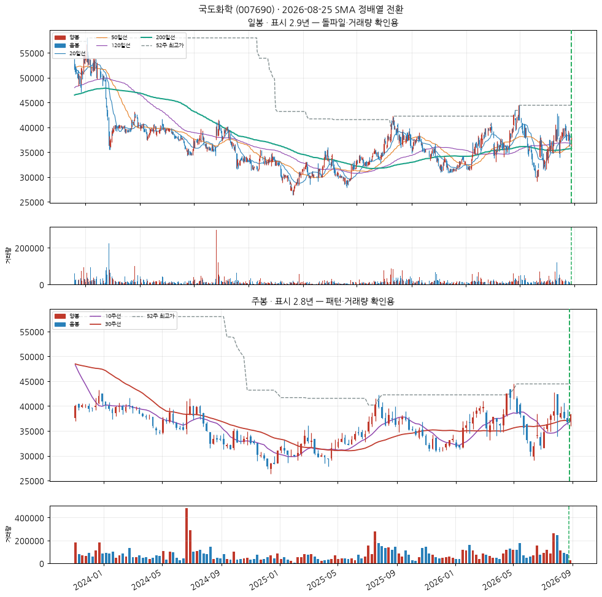
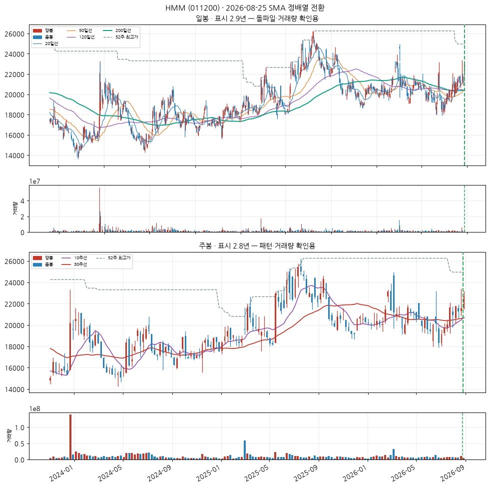
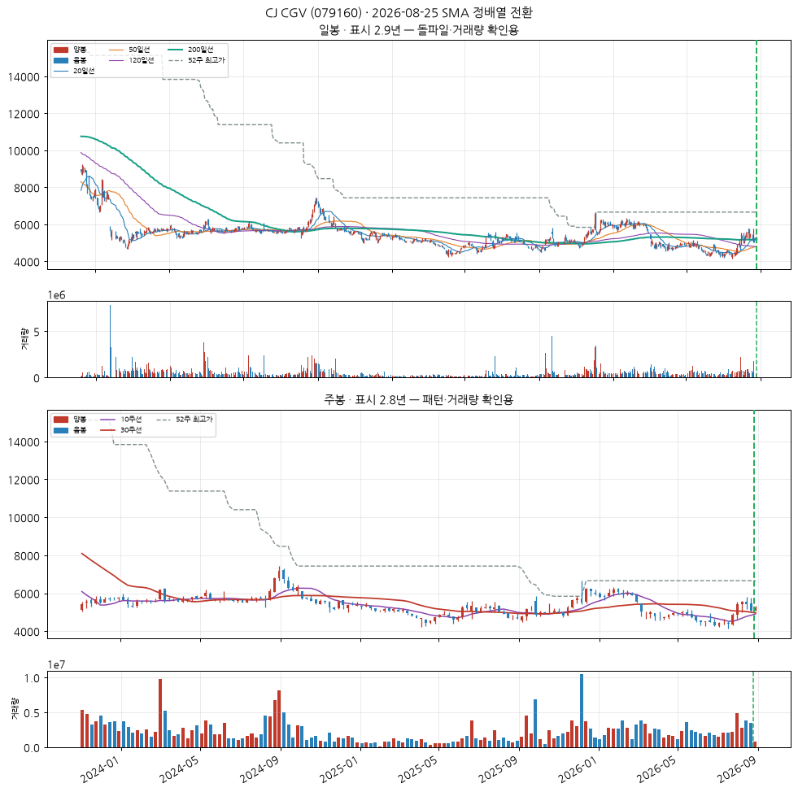
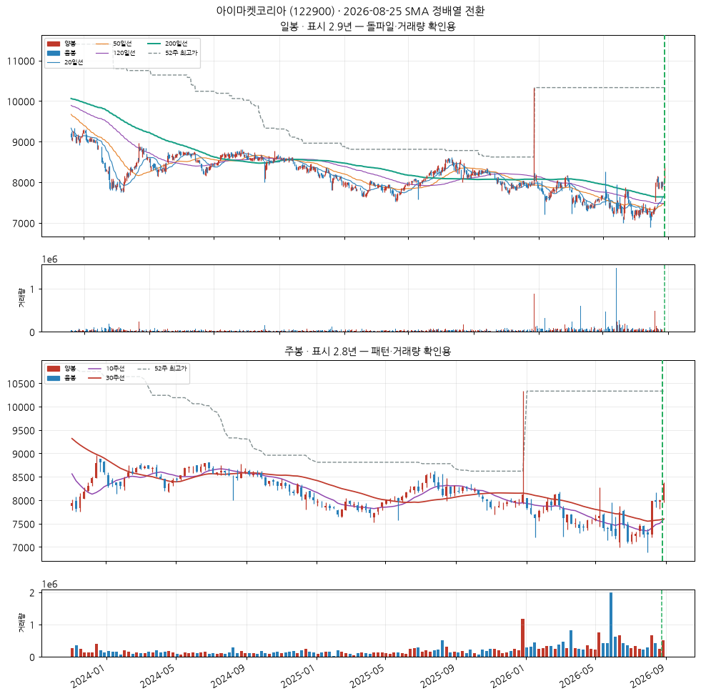
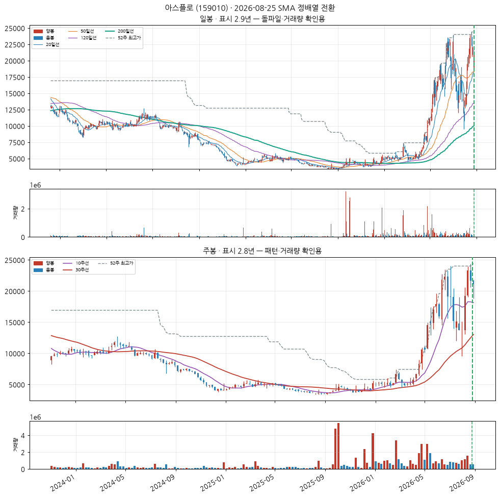
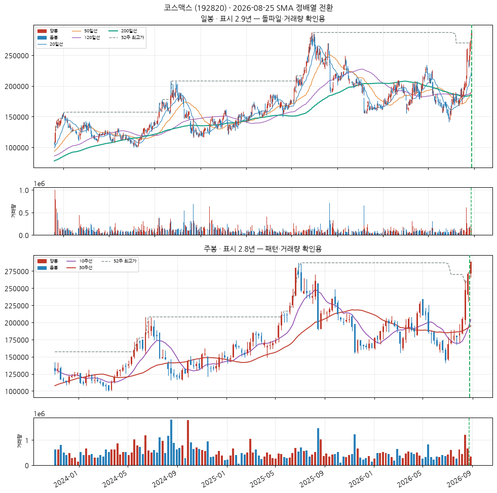
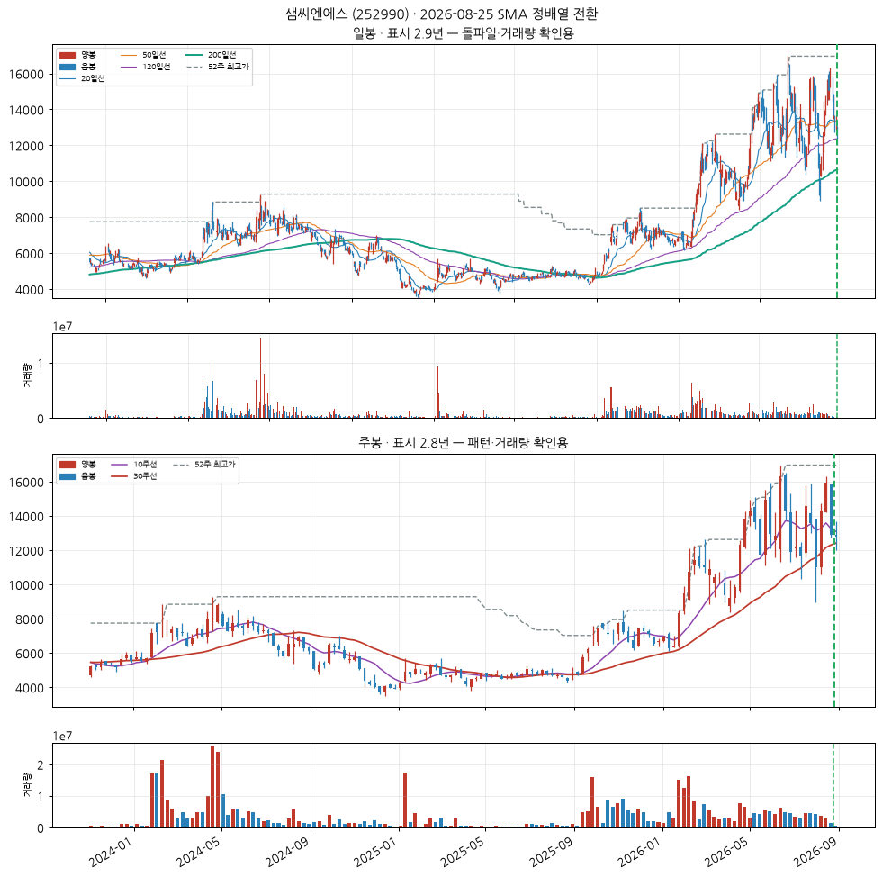
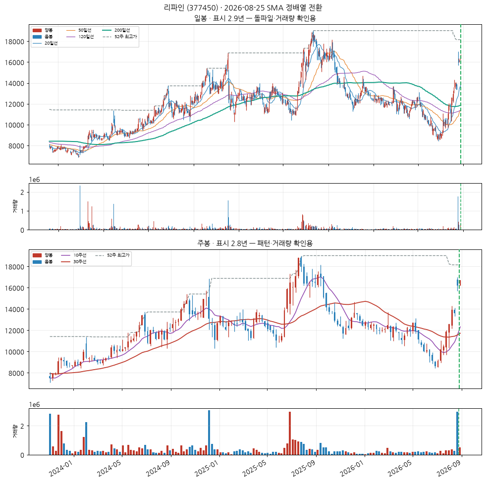

기초 화학물질 제조업
업종 참고: RS 평균 37/99(업종 중 상위 60%) · 오늘 신호 3건 · 코스피 대비 -25.5%p(126일)
🧪 자체 섹터 분류(실험적, 참고용): 1차 철강 제조업 (케이아이엔엑스·TYM 등 14종목)
섹터 내 RS 순위: 3/14위 (RS 54/99)
섹터 1~3위: 케이아이엔엑스(84), TYM(54), 국도화학(54)
※ 자체 상관관계 계산 — 검증 시 기준업종 11개 중 8개 정확, 시간에 따라 자주 바뀔 수 있음(3개월 안정성 실측 낮음)
종가 38,350 · 거래대금 7.3억
정배열 1일차거래량비 0.7x정배열 후 +0.0%
손절 35,282 | 목표 47,554 | 수량 260주

CC — 분기 실적 성장 우수
2026 반기보고서(누적) · 순이익 흑자전환(+nan억원→+439억원) · EPS 흑자전환(+nan원→+5,077원) · 매출 흑자전환(+nan억원→+5,343억원)
DART 공시 기준 · 분기 단독 전년동기 대비
AA — 연간 실적 성장 양호
2025 사업보고서(연간) · 순이익 +144.9% · EPS +146.6% · 매출 +6.9%
DART 공시 기준 · 연간 전년동기 대비
NN — 신고가·모멘텀 데이터 없음
신고가 데이터 없음
SS — 수급(거래량) 미흡
20일 평균 대비 0.71배
유통주식수·순매수 데이터는 미보유 (거래량으로만 근사)
LL — 주도주(상대강도) 보통
RS 등급 54/99 (유니버스 1951종목 중 백분위) · 지수대비 -11.5%p (126일)
상위 시가총액 유니버스 기준 — KRX 전체 대비 백분위 아님
II — 기관·외국인 수급 양호
20일 순매수 +7.90% (거래대금 대비) · 최근절반 -3.65% vs 이전절반 +15.21% (약화) · 순매수 14일 · 누적 +14.1억원
한국투자증권 공식 API(KIS) 기준 · 기관+외국인 합산, 기타법인 제외로 거래대금은 소폭 과소추정 · 임계값은 아직 실측 검증 전 잠정치 — 수급 이력이 쌓이면 다른 지표와 같은 방식으로 구분력을 측정해 조정 예정 · 최근 유입이 이전보다 약해져 한 단계 낮춤
MM — 시장방향 미흡
KOSPI 지수가 60일선 아래
실제 매매 필터로는 미적용(표시 전용) — 종목 선별보다 지수 자체 타이밍이 더 효율적이라는 자체 검증 결과 있음 (reports/vs_kospi.md)
해상 운송업
업종 참고: RS 평균 64/99(업종 중 상위 6%) · 오늘 신호 1건 · 코스피 대비 -4.0%p(126일)
🧪 자체 섹터 분류(실험적, 참고용): 해상 운송업 (가비아·오로라 등 25종목)
섹터 내 RS 순위: 7/25위 (RS 69/99)
섹터 1~3위: 가비아(93), 오로라(89), 팬오션(83)
※ 자체 상관관계 계산 — 검증 시 기준업종 11개 중 8개 정확, 시간에 따라 자주 바뀔 수 있음(3개월 안정성 실측 낮음)
종가 22,650 · 거래대금 417억
정배열 1일차거래량비 1.2x정배열 후 +0.0%
손절 20,838 | 목표 28,086 | 수량 441주

CC — 분기 실적 성장 우수
2026 반기보고서(누적) · 순이익 흑자전환(+nan억원→+4,114억원) · 매출 흑자전환(+nan억원→+34,020억원)
DART 공시 기준 · 분기 단독 전년동기 대비
AA — 연간 실적 성장 미흡
2025 사업보고서(연간) · 순이익 -50.3% · EPS -61.0% · 매출 -6.9%
DART 공시 기준 · 연간 전년동기 대비
NN — 신고가·모멘텀 데이터 없음
신고가 데이터 없음
SS — 수급(거래량) 양호
20일 평균 대비 1.17배
유통주식수·순매수 데이터는 미보유 (거래량으로만 근사)
LL — 주도주(상대강도) 보통
RS 등급 69/99 (유니버스 1951종목 중 백분위) · 지수대비 -1.9%p (126일)
상위 시가총액 유니버스 기준 — KRX 전체 대비 백분위 아님
II — 기관·외국인 수급 양호
20일 순매수 +22.35% (거래대금 대비) · 최근절반 +21.40% vs 이전절반 +23.88% (약화) · 순매수 15일 · 누적 +1,551.6억원
한국투자증권 공식 API(KIS) 기준 · 기관+외국인 합산, 기타법인 제외로 거래대금은 소폭 과소추정 · 임계값은 아직 실측 검증 전 잠정치 — 수급 이력이 쌓이면 다른 지표와 같은 방식으로 구분력을 측정해 조정 예정 · 최근 유입이 이전보다 약해져 한 단계 낮춤
MM — 시장방향 미흡
KOSPI 지수가 60일선 아래
실제 매매 필터로는 미적용(표시 전용) — 종목 선별보다 지수 자체 타이밍이 더 효율적이라는 자체 검증 결과 있음 (reports/vs_kospi.md)
영화, 비디오물, 방송프로그램 제작 및 배급업
업종 참고: RS 평균 21/99(업종 중 상위 87%) · 오늘 신호 1건 · 코스닥 대비 -2.8%p(126일)
🧪 자체 섹터 분류(실험적, 참고용): 소프트웨어 개발 및 공급업 (리파인·LG생활건강 등 18종목)
섹터 내 RS 순위: 7/18위 (RS 51/99)
섹터 1~3위: 리파인(90), LG생활건강(82), 시프트업(58)
※ 자체 상관관계 계산 — 검증 시 기준업종 11개 중 8개 정확, 시간에 따라 자주 바뀔 수 있음(3개월 안정성 실측 낮음)
종가 5,230 · 거래대금 20억
정배열 1일차거래량비 0.5x정배열 후 +0.0%
손절 4,812 | 목표 6,485 | 수량 1,912주

CC — 분기 실적 성장 우수
2026 반기보고서(누적) · 순이익 흑자전환(+nan억원→+226억원) · 매출 흑자전환(+nan억원→+5,940억원)
DART 공시 기준 · 분기 단독 전년동기 대비
AA — 연간 실적 성장 데이터 없음
데이터 없음 — DART 조회 실패 또는 사업보고서 없음 (DART_API_KEY 필요)
NN — 신고가·모멘텀 데이터 없음
신고가 데이터 없음
SS — 수급(거래량) 미흡
20일 평균 대비 0.49배
유통주식수·순매수 데이터는 미보유 (거래량으로만 근사)
LL — 주도주(상대강도) 보통
RS 등급 51/99 (유니버스 1951종목 중 백분위) · 지수대비 -13.6%p (126일)
상위 시가총액 유니버스 기준 — KRX 전체 대비 백분위 아님
II — 기관·외국인 수급 미흡
20일 순매수 -0.54% (거래대금 대비) · 최근절반 -10.00% vs 이전절반 +8.50% (약화) · 순매수 10일 · 누적 -4.3억원
한국투자증권 공식 API(KIS) 기준 · 기관+외국인 합산, 기타법인 제외로 거래대금은 소폭 과소추정 · 임계값은 아직 실측 검증 전 잠정치 — 수급 이력이 쌓이면 다른 지표와 같은 방식으로 구분력을 측정해 조정 예정
MM — 시장방향 미흡
KOSPI 지수가 60일선 아래
실제 매매 필터로는 미적용(표시 전용) — 종목 선별보다 지수 자체 타이밍이 더 효율적이라는 자체 검증 결과 있음 (reports/vs_kospi.md)
아이마켓코리아 (122900)
신규
KOSPI
상품 종합 도매업
업종 참고: RS 평균 52/99(업종 중 상위 22%) · 오늘 신호 1건 · 코스피 대비 -13.2%p(126일)
🧪 자체 섹터 분류(실험적, 참고용): 부동산 임대 및 공급업 (Chemed Corp.·KPX홀딩스 등 30종목)
섹터 내 RS 순위: 6/30위 (RS 68/99)
섹터 1~3위: Chemed Corp.(89), KPX홀딩스(86), 코람코더원리츠(83)
※ 자체 상관관계 계산 — 검증 시 기준업종 11개 중 8개 정확, 시간에 따라 자주 바뀔 수 있음(3개월 안정성 실측 낮음)
종가 8,350 · 거래대금 36억
정배열 1일차거래량비 5.2x정배열 후 +0.0%
손절 7,682 | 목표 10,354 | 수량 1,197주

CC — 분기 실적 성장 우수
2026 반기보고서(누적) · 순이익 흑자전환(+nan억원→+191억원) · EPS 흑자전환(+nan원→+517원)
DART 공시 기준 · 분기 단독 전년동기 대비
AA — 연간 실적 성장 미흡
2025 사업보고서(연간) · 순이익 -13.6% · EPS -22.3%
DART 공시 기준 · 연간 전년동기 대비
NN — 신고가·모멘텀 데이터 없음
신고가 데이터 없음
SS — 수급(거래량) 우수
20일 평균 대비 5.21배
유통주식수·순매수 데이터는 미보유 (거래량으로만 근사)
LL — 주도주(상대강도) 보통
RS 등급 68/99 (유니버스 1951종목 중 백분위) · 지수대비 -2.3%p (126일)
상위 시가총액 유니버스 기준 — KRX 전체 대비 백분위 아님
II — 기관·외국인 수급 양호
20일 순매수 +6.78% (거래대금 대비) · 최근절반 -12.23% vs 이전절반 +26.47% (약화) · 순매수 10일 · 누적 +10.9억원
한국투자증권 공식 API(KIS) 기준 · 기관+외국인 합산, 기타법인 제외로 거래대금은 소폭 과소추정 · 임계값은 아직 실측 검증 전 잠정치 — 수급 이력이 쌓이면 다른 지표와 같은 방식으로 구분력을 측정해 조정 예정 · 최근 유입이 이전보다 약해져 한 단계 낮춤
MM — 시장방향 미흡
KOSPI 지수가 60일선 아래
실제 매매 필터로는 미적용(표시 전용) — 종목 선별보다 지수 자체 타이밍이 더 효율적이라는 자체 검증 결과 있음 (reports/vs_kospi.md)
일반 목적용 기계 제조업
업종 참고: RS 평균 29/99(업종 중 상위 72%) · 오늘 신호 1건 · 코스닥 대비 +20.8%p(126일)
🧪 자체 섹터 분류(실험적, 참고용): 전자부품 제조업 (아스플로·후성 등 6종목)
섹터 내 RS 순위: 1/6위 (RS 99/99)
섹터 1~3위: 아스플로(99), 후성(94), 세보엠이씨(86)
※ 자체 상관관계 계산 — 검증 시 기준업종 11개 중 8개 정확, 시간에 따라 자주 바뀔 수 있음(3개월 안정성 실측 낮음)
종가 21,100 · 거래대금 65억
정배열 1일차거래량비 1.4x정배열 후 +0.0%
손절 19,412 | 목표 26,164 | 수량 473주

CC — 분기 실적 성장 우수
2026 반기보고서(누적) · 순이익 흑자전환(+nan억원→+88억원) · EPS 흑자전환(+nan원→+661원)
DART 공시 기준 · 분기 단독 전년동기 대비
AA — 연간 실적 성장 미흡
2025 사업보고서(연간) · 순이익 적자확대(-24억원→-99억원) · EPS 적자확대(-182원→-769원)
DART 공시 기준 · 연간 전년동기 대비
NN — 신고가·모멘텀 데이터 없음
신고가 데이터 없음
SS — 수급(거래량) 양호
20일 평균 대비 1.37배
유통주식수·순매수 데이터는 미보유 (거래량으로만 근사)
LL — 주도주(상대강도) 우수
RS 등급 99/99 (유니버스 1951종목 중 백분위) · 지수대비 +289.5%p (126일)
상위 시가총액 유니버스 기준 — KRX 전체 대비 백분위 아님
II — 기관·외국인 수급 미흡
20일 순매수 -5.12% (거래대금 대비) · 최근절반 -6.86% vs 이전절반 -2.76% (약화) · 순매수 8일 · 누적 -44.6억원
한국투자증권 공식 API(KIS) 기준 · 기관+외국인 합산, 기타법인 제외로 거래대금은 소폭 과소추정 · 임계값은 아직 실측 검증 전 잠정치 — 수급 이력이 쌓이면 다른 지표와 같은 방식으로 구분력을 측정해 조정 예정
MM — 시장방향 양호
KOSDAQ 지수가 20일선 위
실제 매매 필터로는 미적용(표시 전용) — 종목 선별보다 지수 자체 타이밍이 더 효율적이라는 자체 검증 결과 있음 (reports/vs_kospi.md)
기타 화학제품 제조업
업종 참고: RS 평균 46/99(업종 중 상위 37%) · 오늘 신호 7건 · 코스피 대비 -13.2%p(126일)
🧪 자체 섹터 분류(실험적, 참고용): 기타 화학제품 제조업 (한국콜마·코스메카코리아 등 5종목)
섹터 내 RS 순위: 3/5위 (RS 94/99)
섹터 1~3위: 한국콜마(97), 코스메카코리아(95), 코스맥스(94)
※ 자체 상관관계 계산 — 검증 시 기준업종 11개 중 8개 정확, 시간에 따라 자주 바뀔 수 있음(3개월 안정성 실측 낮음)
종가 289,000 · 거래대금 385억
정배열 1일차거래량비 0.8x정배열 후 +0.0%
손절 265,880 | 목표 358,360 | 수량 34주

CC — 분기 실적 성장 우수
2026 반기보고서(누적) · 순이익 흑자전환(+nan억원→+500억원) · EPS 흑자전환(+nan원→+4,292원) · 매출 흑자전환(+nan억원→+7,949억원)
DART 공시 기준 · 분기 단독 전년동기 대비
AA — 연간 실적 성장 양호
2025 사업보고서(연간) · 순이익 +48.2% · EPS +43.4% · 매출 +10.7%
DART 공시 기준 · 연간 전년동기 대비
NN — 신고가·모멘텀 데이터 없음
신고가 데이터 없음
SS — 수급(거래량) 미흡
20일 평균 대비 0.84배
유통주식수·순매수 데이터는 미보유 (거래량으로만 근사)
LL — 주도주(상대강도) 우수
RS 등급 94/99 (유니버스 1951종목 중 백분위) · 지수대비 +44.1%p (126일)
상위 시가총액 유니버스 기준 — KRX 전체 대비 백분위 아님
II — 기관·외국인 수급 우수
20일 순매수 +9.05% (거래대금 대비) · 최근절반 +9.38% vs 이전절반 +8.11% (개선) · 순매수 15일 · 누적 +664.4억원
한국투자증권 공식 API(KIS) 기준 · 기관+외국인 합산, 기타법인 제외로 거래대금은 소폭 과소추정 · 임계값은 아직 실측 검증 전 잠정치 — 수급 이력이 쌓이면 다른 지표와 같은 방식으로 구분력을 측정해 조정 예정
MM — 시장방향 미흡
KOSPI 지수가 60일선 아래
실제 매매 필터로는 미적용(표시 전용) — 종목 선별보다 지수 자체 타이밍이 더 효율적이라는 자체 검증 결과 있음 (reports/vs_kospi.md)
전자부품 제조업
업종 참고: RS 평균 42/99(업종 중 상위 45%) · 오늘 신호 2건 · 코스닥 대비 +28.4%p(126일)
🧪 자체 섹터 분류(실험적, 참고용): 특수 목적용 기계 제조업 (샘씨엔에스·테크윙 등 22종목)
섹터 내 RS 순위: 1/22위 (RS 79/99)
섹터 1~3위: 샘씨엔에스(79), 테크윙(72), 고영(48)
※ 자체 상관관계 계산 — 검증 시 기준업종 11개 중 8개 정확, 시간에 따라 자주 바뀔 수 있음(3개월 안정성 실측 낮음)
종가 12,790 · 거래대금 63억
정배열 1일차거래량비 0.8x정배열 후 +0.0%
손절 11,767 | 목표 15,860 | 수량 781주

CC — 분기 실적 성장 우수
2026 반기보고서(누적) · 순이익 흑자전환(+nan억원→+113억원) · 매출 흑자전환(+nan억원→+313억원)
DART 공시 기준 · 분기 단독 전년동기 대비
AA — 연간 실적 성장 우수
2025 사업보고서(연간) · 순이익 +354.0% · 매출 +46.3%
DART 공시 기준 · 연간 전년동기 대비
NN — 신고가·모멘텀 데이터 없음
신고가 데이터 없음
SS — 수급(거래량) 미흡
20일 평균 대비 0.77배
유통주식수·순매수 데이터는 미보유 (거래량으로만 근사)
LL — 주도주(상대강도) 양호
RS 등급 79/99 (유니버스 1951종목 중 백분위) · 지수대비 +46.8%p (126일)
상위 시가총액 유니버스 기준 — KRX 전체 대비 백분위 아님
II — 기관·외국인 수급 양호
20일 순매수 +7.42% (거래대금 대비) · 최근절반 +6.22% vs 이전절반 +8.17% (약화) · 순매수 14일 · 누적 +121.3억원
한국투자증권 공식 API(KIS) 기준 · 기관+외국인 합산, 기타법인 제외로 거래대금은 소폭 과소추정 · 임계값은 아직 실측 검증 전 잠정치 — 수급 이력이 쌓이면 다른 지표와 같은 방식으로 구분력을 측정해 조정 예정 · 최근 유입이 이전보다 약해져 한 단계 낮춤
MM — 시장방향 양호
KOSDAQ 지수가 20일선 위
실제 매매 필터로는 미적용(표시 전용) — 종목 선별보다 지수 자체 타이밍이 더 효율적이라는 자체 검증 결과 있음 (reports/vs_kospi.md)
기타 정보 서비스업
업종 참고: RS 평균 44/99(업종 중 상위 40%) · 오늘 신호 1건 · 코스닥 대비 +21.5%p(126일)
🧪 자체 섹터 분류(실험적, 참고용): 소프트웨어 개발 및 공급업 (리파인·LG생활건강 등 18종목)
섹터 내 RS 순위: 1/18위 (RS 90/99)
섹터 1~3위: 리파인(90), LG생활건강(82), 시프트업(58)
※ 자체 상관관계 계산 — 검증 시 기준업종 11개 중 8개 정확, 시간에 따라 자주 바뀔 수 있음(3개월 안정성 실측 낮음)
종가 16,740 · 거래대금 36억
정배열 1일차거래량비 1.0x정배열 후 +0.0%
손절 15,401 | 목표 20,758 | 수량 597주

CC — 분기 실적 성장 우수
2026 반기보고서(누적) · 순이익 흑자전환(+nan억원→+48억원) · EPS 흑자전환(+nan원→+279원) · 매출 흑자전환(+nan억원→+141억원)
DART 공시 기준 · 분기 단독 전년동기 대비
AA — 연간 실적 성장 미흡
2025 사업보고서(연간) · 순이익 -56.1% · EPS -57.7% · 매출 -9.3%
DART 공시 기준 · 연간 전년동기 대비
NN — 신고가·모멘텀 데이터 없음
신고가 데이터 없음
SS — 수급(거래량) 양호
20일 평균 대비 1.03배
유통주식수·순매수 데이터는 미보유 (거래량으로만 근사)
LL — 주도주(상대강도) 우수
RS 등급 90/99 (유니버스 1951종목 중 백분위) · 지수대비 +64.6%p (126일)
상위 시가총액 유니버스 기준 — KRX 전체 대비 백분위 아님
II — 기관·외국인 수급 우수
20일 순매수 +30.52% (거래대금 대비) · 최근절반 +35.11% vs 이전절반 +0.59% (개선) · 순매수 11일 · 누적 +204.0억원
한국투자증권 공식 API(KIS) 기준 · 기관+외국인 합산, 기타법인 제외로 거래대금은 소폭 과소추정 · 임계값은 아직 실측 검증 전 잠정치 — 수급 이력이 쌓이면 다른 지표와 같은 방식으로 구분력을 측정해 조정 예정
MM — 시장방향 양호
KOSDAQ 지수가 20일선 위
실제 매매 필터로는 미적용(표시 전용) — 종목 선별보다 지수 자체 타이밍이 더 효율적이라는 자체 검증 결과 있음 (reports/vs_kospi.md)